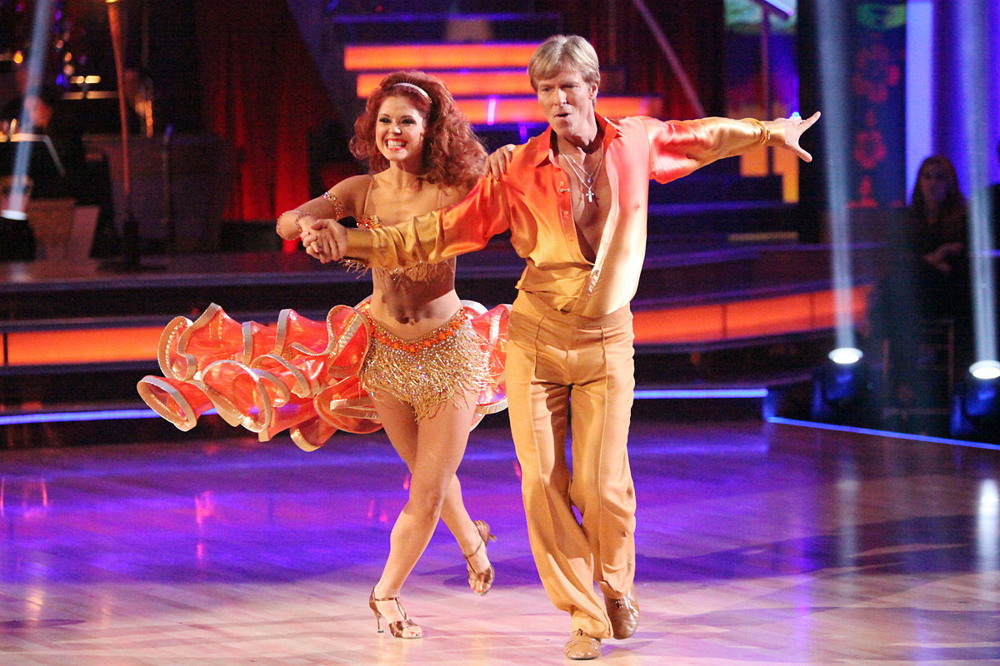
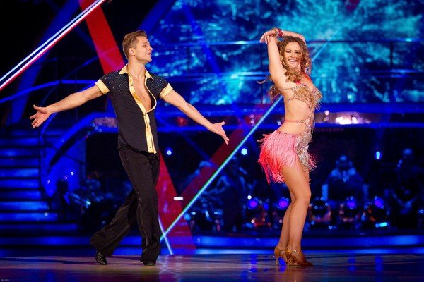
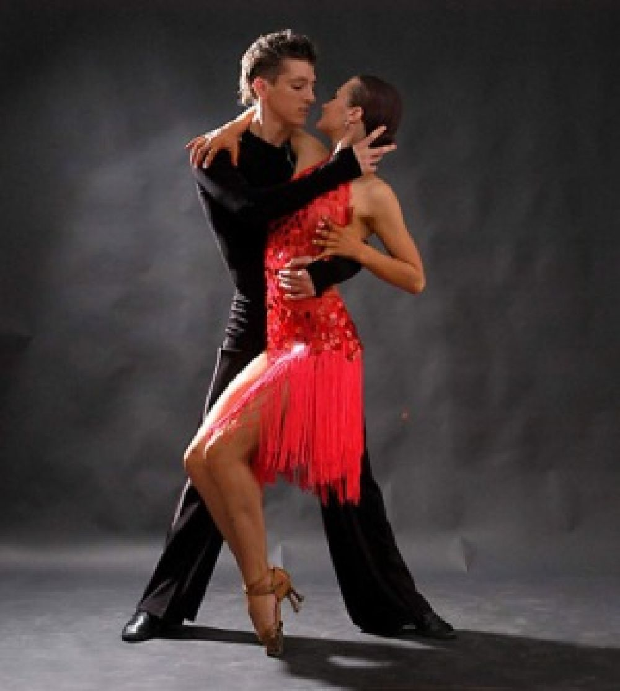
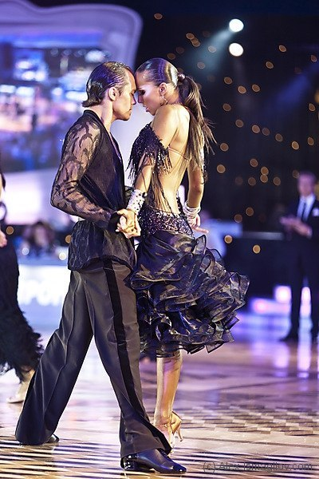
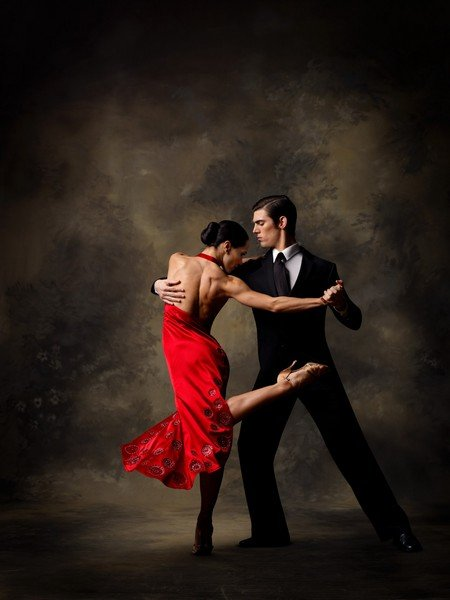
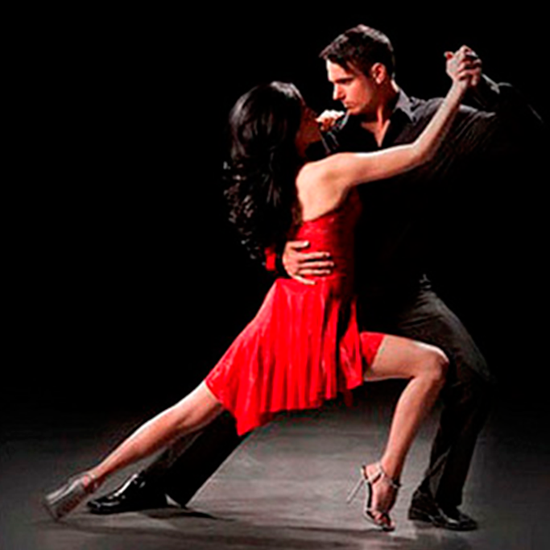
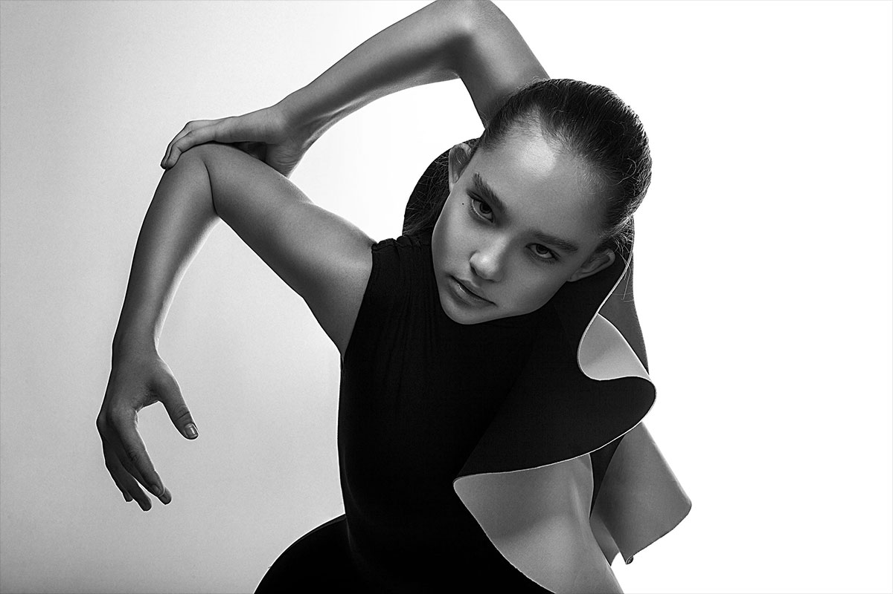
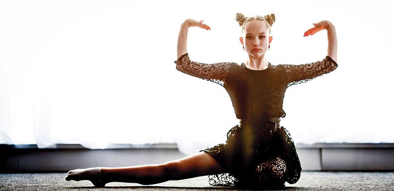
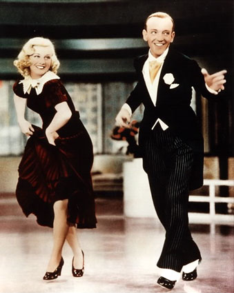
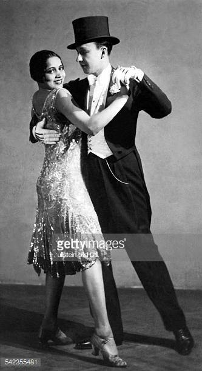

|
Танец — древнейшее из искусств: оно отражает восходящую к самым ранним временам потребность человека передавать другим людям свои радость или скорбь посредством своего тела.
|
«Когда танцуешь, не делай этого технически; техника не имеет отношения к делу. Ты можешь танцевать технически правильно, но упускать всю радость танца. Раствори себя в танце, стань танцем, забудь о танцующем.» — Ошо (Бхагван Шри Раджниш). Храбрость. Радость жить рискуя.
|
Самба
Самба — это колоритная смесь из негритянских и европейских ритмов, зажигательный, темпераментный, и одновременно чувственный танец, гимн любви, молодости и красоте.
Музыкальный размер самбы — 2/4;
Темп быстрый, 48-52 такта в минуту;
Ритм пульсирующий, синкопированный, подчеркивается баунсом – вертикальным раскачиванием и работой бедер. Особенно эффектны движения, в которых мягкие пластичные элементы сочетаются с резкими и прерывистыми.
Виды самбы: На карнавалах в Рио-де-Жанейро танцуют различные варианты Самбы от Bajao до Marcha. Эффектный танец легко трансформируется и именно поэтому лег в основу многих других танцев.


Румба
Румба — это танец эмоций, сочетание страсти, ритма, чувствительности. Широкая гамма разнообразных оттенков данного танца позволяют передать в плавных движениях все страстные чувства двух партнеров.
Музыкальный размер танца — 4/4, с довольно выраженным акцентом на 4-ом ударе каждого такта.
Темп исполнения 25-27 тактов в минуту.
Ритм этого танца базируется на ритме RumbaSon.
Схему исполнения танца нельзя назвать легкой. Шаги, при исполнении румбы, делаются на счет 2, 3 и 4. На каждом шаге сгибаются и выпрямляются колени, между счетом выполняются повороты. Все шаги делаются с носка, а вес корпуса находится впереди.


Танго
Танго — один из самым загадочных танцев в мире. Ведь в нем уживаются сдержанность характеров, строгость линий и безудержная неприкрытая страсть одновременно.
Музыкальный размер — 2/4 или 4/4 .
Темп — медленный.
В мире существует множество разновидностей танго, которые имеют свои особенности и черты. Но какое бы направление танго не обсуждалось, только к этому танцу можно применить цитату «история любви в одном танце» или «любовь за несколько шагов». Ведь более «полный» и насыщенный эмоциями танец трудно найти.
Танго считается одним из самых сложных бальных танцев. И дело даже не в особенностях хореографии, которая является далеко не простой, а в том, что мало научиться танцевать танго. Этот танец необходимо чувствовать, понимать, ощущать.


Vogue (Вог)
Вог — стиль, базирующийся на модельных позах и подиумной походке.
Отличительные особенности: быстрая техника движения руками, вычурная манерная походка, падения, вращения, обильное количество позировок, эмоциональная игра.
Музыка разная — это может быть и хаус, и r'n'b, и даже джаз.
В шоу-номерах Вог обычно отдельно не исполняется, его используют как средство для передачи эмоции и частенько разбавляют этим стилям выступления в различных стилях.


Чарльстон
Музыкальный размер танца — 4/4.
Чарльстон имеет синкопированную ритмичную структуру.
В нем есть определенные черты бальной хореографии, а именно, фокстрота, с той разницей, что чарльстон имеет ограниченный характер передвижений и исполняется чаще всего на месте.
Музыкальное сопровождение представлено определенными композициями джаза и свинга.


Обратно на главную страницу
|